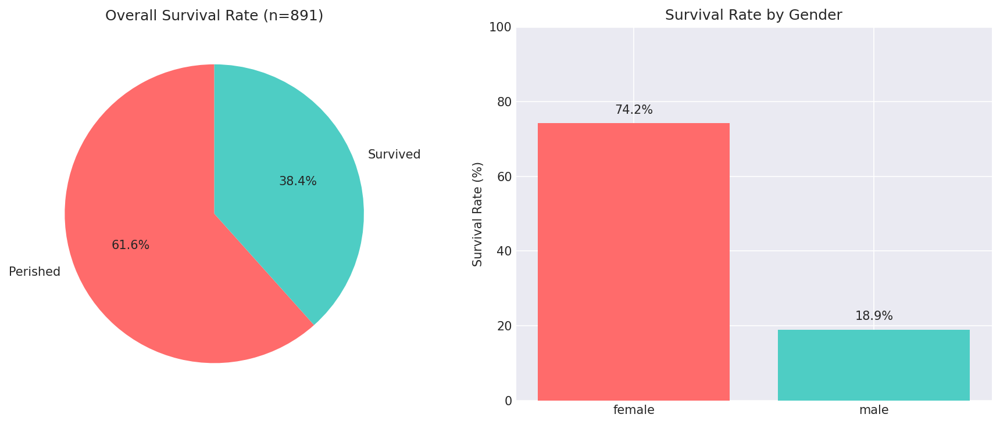

ByteDance가 공개한 오픈소스 DeerFlow 2.0은 수십 개의 서브에이전트를 동시 실행하며 장기 목표를 자율 처리하는 SuperAgent 프레임워크다. 출시 당일 GitHub에서 2,394개 스타를 획득하며 트렌딩 1위에 올랐다. 이 아키텍처가 자율형 데이터 운영체제의 현실을 얼마나 앞당기고 있는지 분석한다.
2026.03 · (주)페블러스 데이터 커뮤니케이션팀
읽는 시간 약 11분 · English
DeerFlow 2.0이란 무엇인가
2026년 2월 28일, ByteDance는 DeerFlow 2.0을 공개했다. 공식 설명은 간결하다: "서브에이전트, 메모리, 샌드박스를 오케스트레이션해 거의 모든 작업을 수행하는 오픈소스 슈퍼에이전트 하니스(harness)."
기존 v1이 딥 리서치 전용 도구였다면, v2는 완전한 제로베이스 재작성이다. 코드를 한 줄도 공유하지 않는 새로운 아키텍처 위에, 목적이 근본적으로 확장됐다. 리서치뿐 아니라 코드 실행, 슬라이드 생성, 대시보드 구축, 데이터 파이프라인 자동화까지 — 장기 목표(Long-horizon task)라면 무엇이든 처리한다.
"에이전트는 목표를 받으면 수십 개의 서브에이전트로 분해(fan out)하고, 각자 다른 각도를 탐색한 뒤, 단일 결과물로 수렴(converge)한다."
— DeerFlow 2.0 공식 문서
이 fan-out/converge 패턴은 단순한 체인이 아니다. 인간이 팀을 이끄는 방식 — 작업을 나눠 병렬로 진행하고 결과를 통합하는 구조 — 를 AI가 스스로 수행하는 것이다. DeerFlow는 그 첫 번째 오픈소스 구현 중 하나다.
3계층 아키텍처: 에이전트 · 메모리 · 샌드박스
DeerFlow 2.0의 핵심은 세 가지 레이어가 유기적으로 결합한 구조다. LangGraph를 기반으로 구축된 이 시스템은 각 레이어가 독립적으로 확장 가능하면서도 긴밀하게 협력한다.

에이전트 레이어
리드 에이전트가 목표를 분해하고 서브에이전트를 동적으로 스폰한다. 각 서브에이전트는 독립 컨텍스트와 도구 접근권을 가지며, 부모·형제 에이전트와 격리된다.
메모리 레이어
세션을 초월한 장기 지속 메모리. 사용자 선호, 작성 스타일, 기술 패턴을 누적한다. 중복 사실 제거로 무한 팽창을 방지하며, 로컬 저장으로 데이터 주권을 보장한다.
샌드박스 레이어
코드 실행 격리 환경. 로컬(호스트 머신), Docker 컨테이너, Kubernetes 파드 — 세 가지 모드로 규모에 맞게 선택 가능하다.
스킬 시스템: Markdown으로 정의하는 AI 역량
DeerFlow의 가장 독특한 설계 선택 중 하나는 스킬(Skill)이다. 스킬은 Markdown 파일로 정의되는 구조화된 역량 모듈이다. 코드가 아닌 자연어로 워크플로우, 베스트 프랙티스, 지원 리소스를 기술하면 에이전트가 그것을 해석하고 실행한다.
name: deep-research
version: 2.1
author: bytedance
---
# Deep Research Skill
When this skill is invoked:
1. Decompose the query into 5-8 research angles
2. Spawn parallel sub-agents for each angle
3. Use web_search + web_fetch for each agent
4. Synthesize results into structured report
스킬은 진보적 로딩(Progressive Loading) 방식으로 동작한다. 모든 스킬을 사전에 컨텍스트 창에 로드하는 대신, 필요한 순간에만 해당 스킬을 불러온다. 100k 토큰의 컨텍스트 창을 최대한 장기 목표 처리에 할당하기 위한 전략이다.
기본 내장 스킬 목록
스킬은 `.skill` 아카이브로 패키징하고 공유할 수 있다. 커뮤니티 에코시스템이 성장하면, DeerFlow는 사실상 "AI 역량의 패키지 매니저"가 될 수 있다.
Long-horizon을 가능하게 만드는 컨텍스트 엔지니어링
몇 시간짜리 작업을 AI가 혼자 처리하려면 컨텍스트 창이 넘치지 않아야 한다. DeerFlow가 이 문제를 해결하는 방식은 세 가지다.

1. 태스크 요약 (Task Summarization)
완료된 서브태스크의 전체 대화 이력 대신, 압축된 요약만 상위 에이전트에 전달한다. 핵심 정보는 보존하면서 토큰 소비를 최소화한다.
2. 파일시스템 오프로딩 (Filesystem Offloading)
중간 결과물(데이터, 코드, 이미지 등)을 /mnt/user-data/workspace에 저장하고, 컨텍스트에는 파일 경로만 유지한다. 대용량 데이터는 메모리 밖으로 내보낸다.
3. 서브에이전트 컨텍스트 격리
각 서브에이전트는 자신의 독립 컨텍스트를 가진다. 부모나 형제 에이전트의 컨텍스트를 볼 수 없어, 불필요한 정보 오염 없이 전문화된 작업에 집중할 수 있다.
핵심 인사이트
이 설계는 인간 팀의 작업 방식과 동일하다. 팀장은 모든 세부사항을 기억할 필요 없이 요약된 결과만 받는다. DeerFlow는 이 원리를 AI에 적용해 수십 단계의 장기 작업을 컨텍스트 창 한계 없이 처리한다.
DeerFlow vs 기존 에이전트 프레임워크
DeerFlow 2.0이 기존 에이전트 프레임워크와 구별되는 핵심은 "Long-horizon + 오픈소스 + 샌드박스"의 조합이다.
| 항목 | DeerFlow 2.0 | AutoGPT | CrewAI | OpenAI Swarm |
|---|---|---|---|---|
| 오픈소스 | ✓ | ✓ | ✓ | ✓ |
| 샌드박스 코드 실행 | ✓ (3종) | △ (제한적) | △ | ✗ |
| 장기 메모리 | ✓ (로컬) | △ | △ | ✗ |
| 동적 서브에이전트 스폰 | ✓ (12개+) | ✗ | ✓ | ✓ |
| 스킬 모듈화 | ✓ (Markdown) | △ (플러그인) | △ | ✗ |
| IM 채널 통합 | ✓ (Slack/Telegram) | ✗ | ✗ | ✗ |
| LLM 독립성 | ✓ (OpenAI 호환) | △ | ✓ | △ (GPT 최적) |
페블러스 시각: 데이터그린하우스와 Long-horizon Agent
DeerFlow 2.0의 등장은 페블러스 데이터그린하우스가 지향하는 자율형 데이터 운영체제의 미래와 직접적으로 교차한다. 네 가지 관점에서 살펴본다.

1. 데이터 파이프라인 자동화의 현실화
DeerFlow가 "슬라이드 생성, 대시보드 구축, 데이터 파이프라인 자동화"를 커뮤니티 사용 사례로 제시하는 것은 우연이 아니다. 데이터그린하우스의 핵심인 자율형 데이터 운영 — 수집·정제·파이프라인·모니터링 — 이 이미 Long-horizon Agent의 응용 범위 안에 들어와 있다.
2. 스킬 = 도메인 전문성의 코드화
DeerFlow의 Markdown 스킬 개념은 도메인 전문 지식을 재사용 가능한 모듈로 코드화한다. 데이터그린하우스 맥락에서 "데이터 품질 진단 스킬", "이상치 탐지 스킬", "합성 데이터 생성 스킬"을 정의하면, 비개발자도 복잡한 데이터 작업을 에이전트에 위임할 수 있다.
3. 메모리 + 컨텍스트 = 장기 데이터 프로젝트 관리
세션을 초월하는 메모리와 파일시스템 오프로딩은 며칠·몇 주에 걸친 데이터 프로젝트를 에이전트가 일관되게 수행할 수 있는 기반이다. 사용자의 데이터 스키마, 비즈니스 규칙, 이전 결정 사항을 기억하는 에이전트는 단순한 도우미를 넘어 실질적인 데이터 파트너가 된다.
4. 오픈소스 생태계의 가속
ByteDance가 이 수준의 아키텍처를 오픈소스로 공개했다는 사실은 에이전틱 AI의 기반 기술이 빠르게 범용화되고 있음을 의미한다. 데이터그린하우스가 차별화해야 할 경쟁 지점이 이동하고 있다 — 인프라보다 도메인 지식과 데이터 품질로.
"DeerFlow의 등장은 Long-horizon Agentic AI가 연구 단계를 넘어 실제 데이터 운영 인프라로 진입하는 분기점을 알린다."
— 페블러스 데이터 커뮤니케이션팀
자주 묻는 질문
참고 자료
- • bytedance/deer-flow — GitHub (2026)
- • LangGraph 공식 문서 — LangChain
- • Harrison Chase et al., "LangChain: Building applications with LLMs through composability" (2022)
- • 페블러스 데이터그린하우스 — pebblous.ai